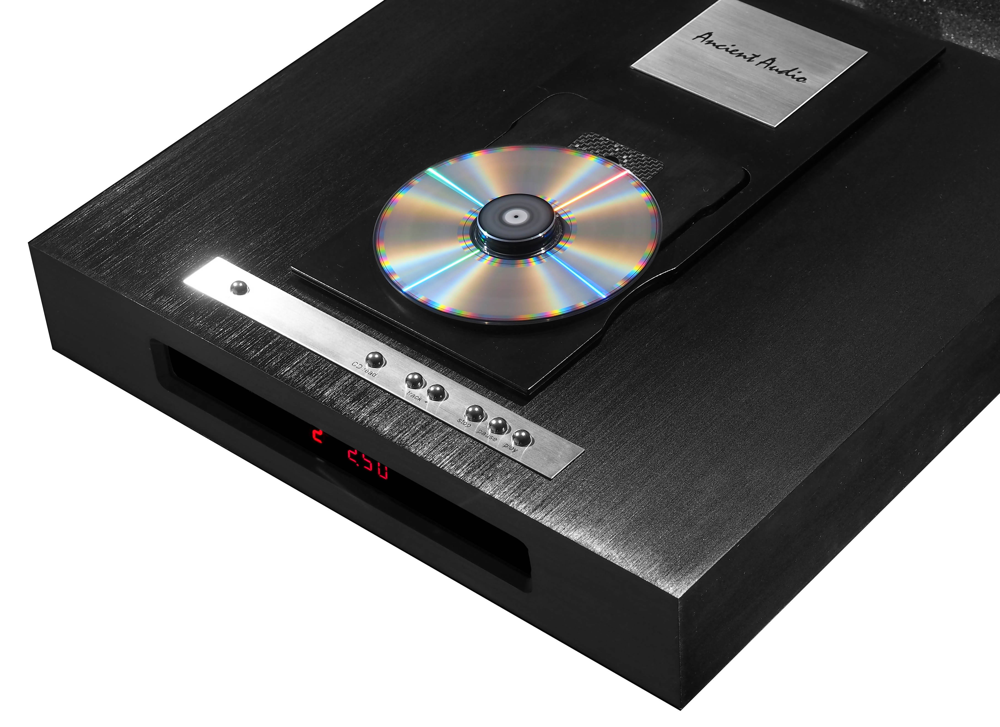
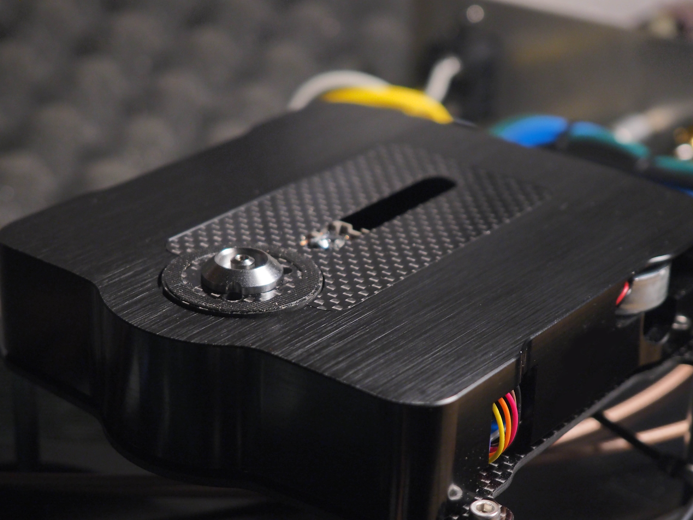
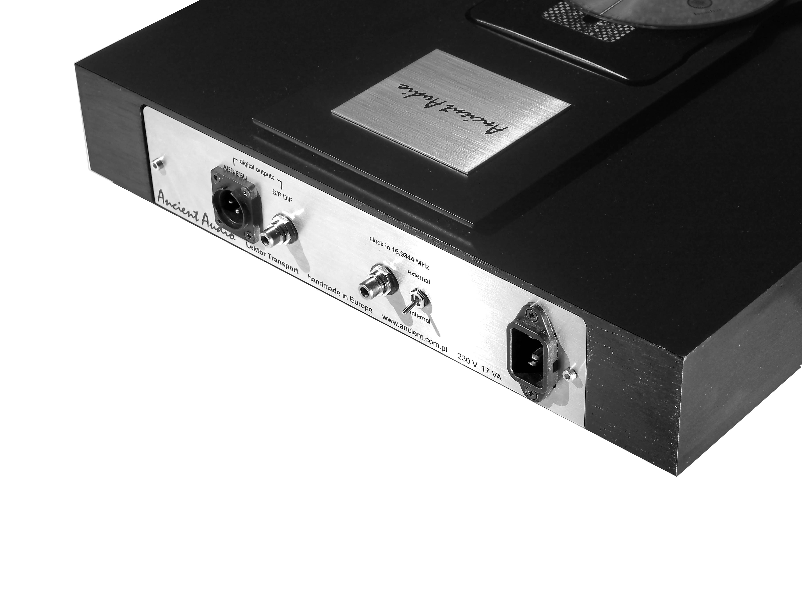

Lektor Transport
Mature players, like Lektor Grand, Lektor Prime, Lektor Air established company in exclusive club of the best CD players in the world.
All these famous players were based on Philips CD-Pro 2 mechanism. It was considered as the best made, and the best sounding mass availaible CD drive.
It bases on three beam laser picup, and similar decoder as CD-Pro2. Also, it is build in solid, stable aluminium chassis. However, sophisticated vibration control due to carbon fibre components, more advanced electronics and wide tunning ways created much better drive.
CD Transport is a digital device. So, precise timing is the key of sound data transmission. Lektor uses Tent Labs low jitter clock. But it's role is total. Usually, a complete CD transport device has multiple clocks to contol CD reading, remote control , keyboard scan, display, etc. These clocks are non syncronised, makes unwanted, digital noise . This noise ( called jitter ) significantly limits the ability to reproduce the subtle nuances of music.
Combining with ultra fast, direct coupled S/P DIF drivers, microwave approved, low looses cables, makes perfect transmission of all music informations, contained in record.
This is explanation, why so many listeners, auditionning Lektor Transport, are shocking by details, never present before. These details were previously lost by imperfect reading and transmission.
One piece, solid aluminium base, CNC machined, create non magnetic, resonat free, stable mechanical build.
